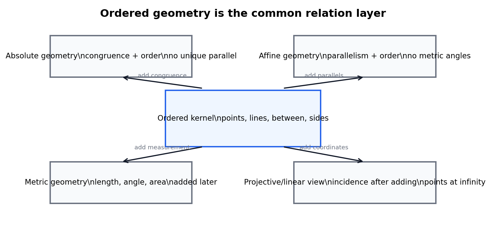
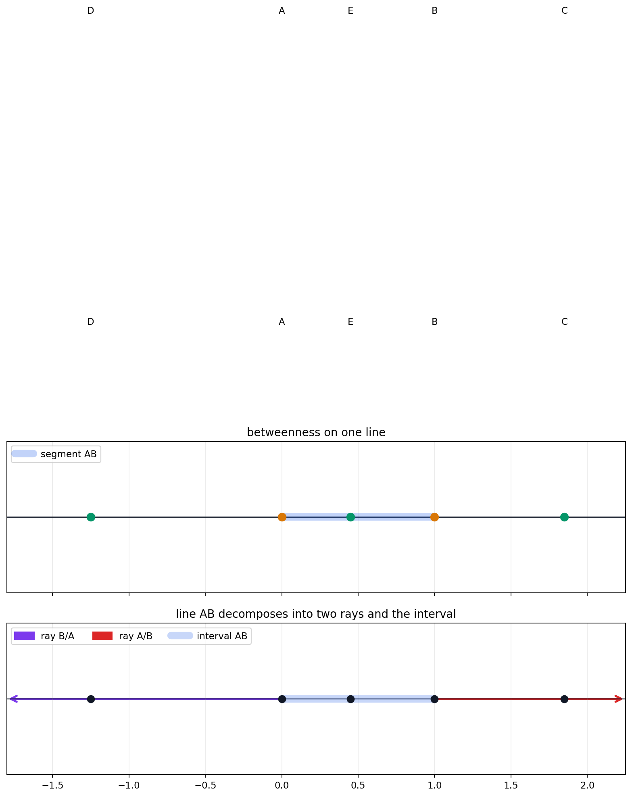
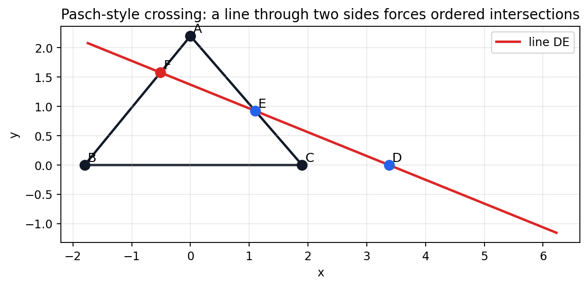
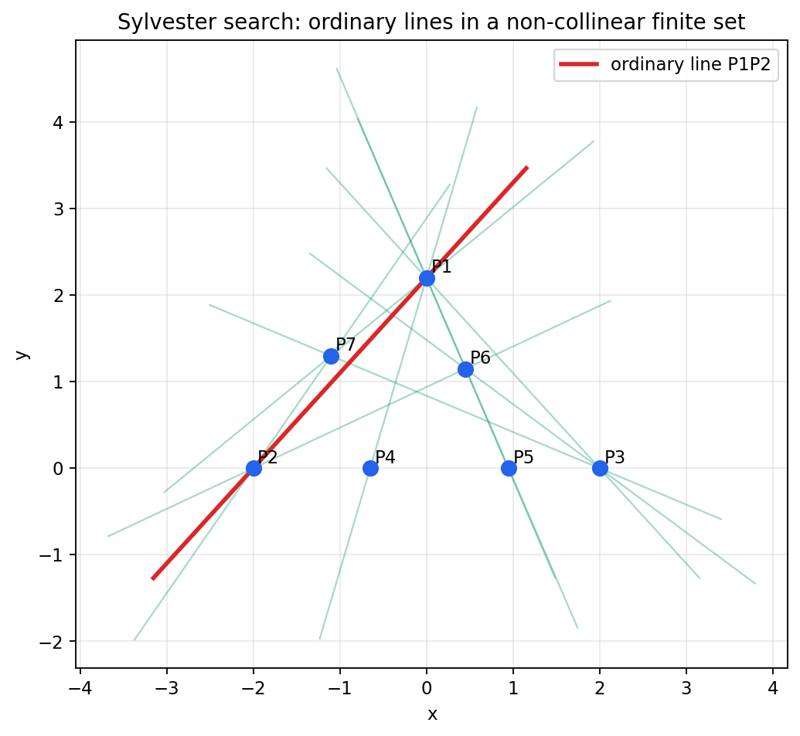
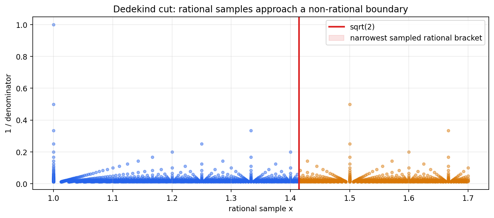
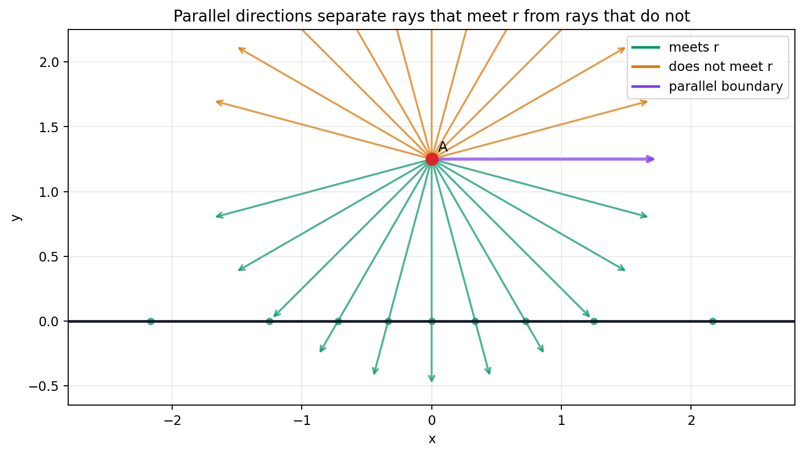

Source Span
Printed pages 175-190; PDF pages 193-208.
Core Language
Betweenness and separation turn diagrams into proof predicates.
Chapter Aim
Extract the order assumptions hidden inside familiar Euclidean reasoning.

Order is the geometry of between, inside, crossing, separating, limiting, and nonmeeting before length or angle measurement takes over.
Printed pages 175-190; PDF pages 193-208.
Betweenness and separation turn diagrams into proof predicates.
Extract the order assumptions hidden inside familiar Euclidean reasoning.

Separate order concepts from metric assumptions.
Segments, rays, and lines become logical predicates.
Crossing a triangle is controlled by side order.
Finite noncollinear point sets force two-point lines.
Arrangements count regions by recurrence.
Dedekind cuts and parallel rays handle limiting cases.
4
The notebook isolates four order-kernel concepts.
Between, same side, opposite side, and segment membership.
Without order, a diagram may show a crossing or containment that the axioms have not licensed.
The chapter checks are tied to PDF pages 193-208.
\([AEB]\), \([BEA]\), \([ABC]\), and \([DAC]\).
\([ACB]\) and \([EAB]\).
$$b\in[\min(a,c),\max(a,c)]$$
\([AEB]\) and \([BEA]\) are both true because endpoints can be reversed.


\(C\) lies between \(B,D\), and \(E\) lies between \(C,A\).
\(F\) lies on segment \(AB\).
1.707
0.283
The theorem is about forced crossing, not about approximate visual alignment.
7
16
15
The first ordinary line is \((P1,P2)\).

$$R_d(n)=R_d(n-1)+R_{d-1}(n-1)$$
7
15
The interactive view has four vertices and four faces.
The hyperplane recurrence is marked true in the summary.

1.413793
1.414286
4.93e-4
2255
The bracket contains \(\sqrt2\).
11
12
1
The \(0^\circ\) ray is the boundary parallel.
23
Negative-angle rays meet the reference line; positive-angle rays do not in the sampled setup.

Segments and rays are controlled by explicit true or false triples.
Pasch converts triangle-entry intuition into segment-membership evidence.
Ordinary lines, hyperplanes, and parallel rays organize finite and limiting incidence.
Dedekind cuts supply the ordered language for missing limit points.